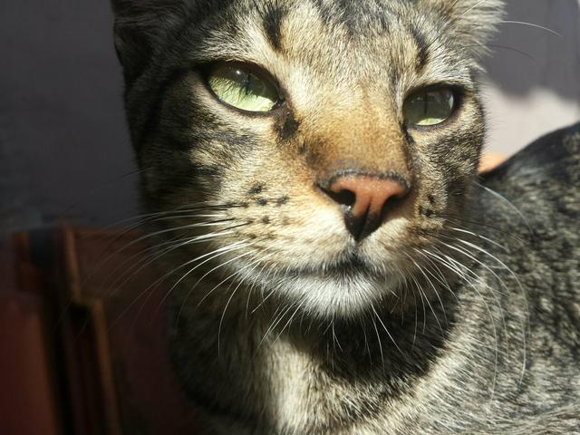

Quero Adotar!!!
Nossos Gatos Especiais
Na ONG Patas Felizes, celebramos a individualidade dos nossos Gatos Especiais. Cada felino traz consigo uma história única, desde gatinhos
com necessidades especiais até personalidades cativantes. Esses gatos nos ensinam sobre resiliência e aceitação, mostrando que a diversidade
enriquece o mundo felino. Cada ronronar, cada olhar, nos recorda que a verdadeira beleza está nas diferenças. Ao acolher esses Gatos Especiais,
descobrimos conexões profundas e momentos únicos. Juntos, construímos um espaço onde todos os gatos, independente de suas particularidades,
encontram amor e um lar acolhedor. Venha conhecer e compartilhar a magia dos nossos Gatos Especiais na Patas Felizes.
Como Adotar?
Na ONG Patas Felizes, adotar um gato é um passo emocionante rumo a uma amizade duradoura.
Siga este simples passo a passo para dar um lar amoroso a um de nossos felinos especiais:
- Conheça os Gatos: Visite a página Gatos Para Doação e conheça os gatinhos disponíveis. Cada um tem uma personalidade única.
- Conversa com Nossos Voluntários: Nossos voluntários adoram falar sobre os gatos. Compartilharemos detalhes sobre histórias e necessidades
individuais.
- A Escolha: Escolha o gato que mais combina com seu estilo de vida e preferências. Nossos voluntários podem oferecer orientações.
- Preencha um Formulário: Complete nosso formulário de adoção. Ele nos ajudará a garantir que a combinação seja perfeita.
- Conheça e Cumprimente: Conheça seu gato em uma sala de interação. Veja como vocês se conectam.
- Conselhos para o Lar: Receba orientações sobre cuidados, alimentação e adaptação do gato ao novo lar.
- Leve Seu Novo Amigo: Depois da aprovação da equipe, leve seu gato para casa e comece uma jornada de amor e alegria.
Como Ajudar?
Na ONG Patas Felizes, a ajuda é essencial para continuarmos fazendo a diferença na vida dos nossos queridos gatinhos. Você pode contribuir de
várias maneiras: desde doações em dinheiro até a doação de tempo como voluntário. Cada gesto conta e fortalece nosso compromisso com o bem-estar
felino. Para facilitar, temos um
PIX: patasfelizes.donate@pixmail.com. Sua generosidade permite que cuidemos de mais gatinhos, oferecendo-lhes
cuidados, amor e uma segunda chance. Junte-se a nós e ajude a escrever histórias de transformação e alegria para nossos peludos amigos!
Resgate
Nossa ONG Patas Felizes se dedica apaixonadamente a resgatar gatos desamparados, proporcionando-lhes
uma nova chance de vida. Veja como nosso processo de resgate funciona:
- Identificação: Monitoramos áreas onde gatos precisam de ajuda, como ruas, terrenos baldios e abrigos precários.
- Avaliação: Avaliamos a saúde e condição de cada gato resgatado para determinar as necessidades médicas imediatas.
- Resgate Seguro: Usamos técnicas seguras para capturar gatos, garantindo que eles se sintam protegidos durante o processo
- Cuidados Médicos: Nossos veterinários oferecem tratamento médico abrangente, incluindo exames, vacinas e cuidados pós-resgate.
- Reabilitação: Gatos que precisam de reabilitação recebem amor e atenção até estarem prontos para adoção.
- Adoção Responsável: Após a recuperação, buscamos lares amorosos onde esses gatos possam viver felizes e saudáveis.
- Conscientização: Compartilhamos histórias de resgate para sensibilizar a comunidade sobre a importância do bem-estar animal.